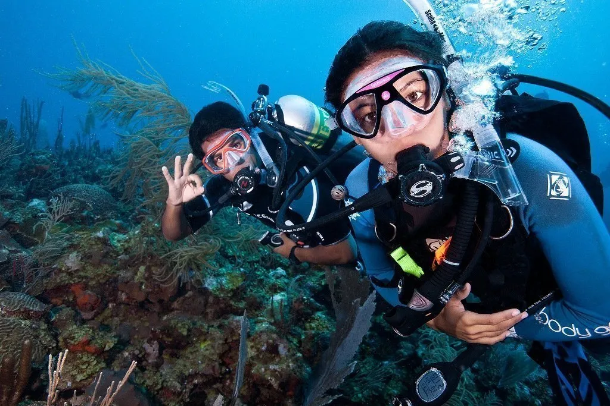
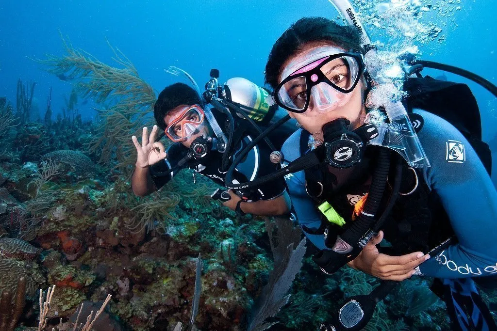

Island Bliss: Tales from My Palawan Tails
 

Island Hopping: Explore El Nido's famous lagoons and Coron’s pristine islands like Malcapuya and Banana Island.
Snorkeling and Diving: Palawan is home to vibrant coral reefs. Try diving in Coron to see its WWII shipwrecks or snorkeling in El Nido's Bacuit Bay.
Beachcombing at Nacpan Beach: This serene, palm-lined stretch is the definition of paradise.
Food Trip: Savor local delicacies like tamilok (woodworm) and fresh seafood at local eateries.
Visit Wildlife Sanctuaries: Check out the Palawan Wildlife Rescue and Conservation Center to see the crocodiles or meet exotic birds and animals.
Practical Tips
Best time to visit: November to May for sunny weather.
Bring eco-friendly sunscreen to protect the coral reefs.
Keep cash handy; many remote areas lack ATMs.
Palawan is a place that blends adventure with tranquility, offering something for every kind of traveler. Whether you’re paddling through lagoons, marveling at underwater treasures, or simply basking in its beauty, Palawan will leave you with memories that linger long after you've left.
So, what are you waiting for? Hit the trails and create your own tales in Palawan!